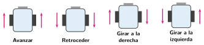

Programamos los motores
🤔 Pienso5 min
Qué hago aquí: Piensa un momento y contesta con lo que ya sabes. No pasa nada si no lo sabes: es para empezar.
Un robot tiene que dar la vuelta a un cuadrado. Escribe las órdenes que le darías.
✏️ Puedes responder escribiendo, con un dibujo o un esquema, o contándolo en voz alta.
📖 Leo y aprendo15 min
Qué hago aquí: Lee despacio, mira los dibujos y los ejemplos, y quédate con la idea clave del final.
Cada motor recibe un número: su velocidad. Va de −100 a 100.
- Número positivo: la rueda gira hacia delante.
- Número negativo: la rueda gira hacia atrás.
- Cero: la rueda se para.

El robot gira porque una rueda va distinta de la otra. Se llama tracción diferencial.
✏️ Hago25 min
Qué hago aquí: Haz las actividades en orden. Empieza siempre por las básicas.
Completa las velocidades.
| Movimiento | Izquierdo | Derecho |
|---|---|---|
| Avanzar | ||
| Girar a la izquierda | ||
| Parar |
Programa el robot: avanza 1 segundo, retrocede 1 segundo y se para. ¿Funciona? Marca: Sí No
Busca cuánto tiempo tiene que girar tu robot para dar un cuarto de vuelta. Apunta tus pruebas.
| Prueba | 1 | 2 | 3 | 4 |
| Tiempo (s) | ||||
| ¿Cuánto giró? |
Usa un bucle «repetir 4 veces» para que el robot dé la vuelta a un cuadrado.
¿Vuelve el robot justo al punto de salida? ¿Por qué?
✏️ Puedes responder escribiendo, con un dibujo o un esquema, o contándolo en voz alta.
🚀 Amplío (si quieres saber más)
Qué hago aquí: ¿Has terminado? Lee la curiosidad o elige el reto. Es voluntario.
Programa el robot para que dibuje un ocho: una curva a la derecha y otra a la izquierda. Pista: en una curva suave, una rueda va a 50 y la otra a 20.
✅ Compruebo5 min
Qué hago aquí: Contesta sin mirar la ficha y marca cómo lo llevas.